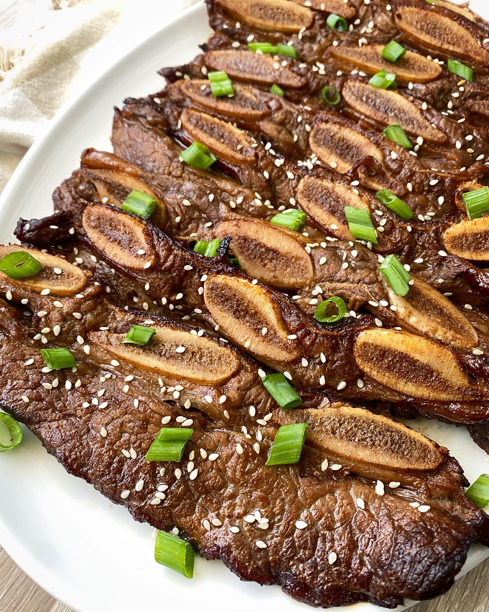

Kalbi

Ingredients
- 800g beef ribs
- 2 tbsp roasted sesame oil
- 3 tbsp honey
- 1/2 onion
- 90g Korean chives
Method
- Put the ribs in a deep baking tray. Fill with enough water to submerge them, cover, then soak for 30–45 minutes, changing the water once or twice. Drain.
- Meanwhile, put all the remaining ingredients in a food processor and blend until smooth. Put the soaked ribs and marinade in a baking tray or wide, flat bowl. Using your hands, massage the sauce into the meat. Cover and refrigerate overnight.
- If cooking on the hob, put a heavy griddle pan over a medium-high heat. When hot, add the ribs to the pan in batches and cook for 6 minutes on each side.
- If barbecuing, place the grill 12–15cm/5–6in above the flame. Cook the ribs for 6 minutes on each side, turning every now and again to cook them evenly, until they are caramel-brown and slightly charred in places.
- Once cooked, use a pair of scissors to cut off the strip of bones and discard, then snip the meat into bite-size pieces. Serve immediately.
Home